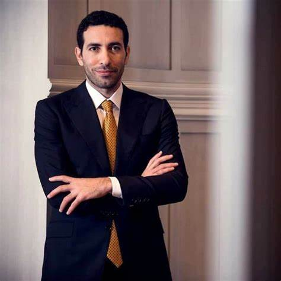

Personal data
| Field | Details |
|---|---|
| Full Name | Mohamed-Aboutrika |
| Data of Birth | November 7 , 1978 |
| Place of Birth | Nahia Village , Giza, Egypt |
| Nationality | Egyption |
| Position | Attaking Midfielder / Playmaker |
Football-career
Abou Trika began his professional career at Tersana Club, where he excelled greatly and contributed to the team's promotion to the Premier League. Abou Trika joined Al Ahly in 2004 and became one of the club's legends. During his time with Al Ahly, he helped the team win numerous titles. He was also instrumental in their dominance in African football, winning several CAF Champions League titles and becoming the club’s star player. He is known for his high skill and unexpected decisive goals and has become a fan favorite
Achievements with Al-Ahly
| Tournament name | Number achieved |
|---|---|
| Egyptian Premier League (7 Titles) | [2004, 2005, 2006, 2007, 2008, 2009, 2010,] |
| Egypt Cup (2 Titles) | [2005, 2006] |
| Egyptian Super Cup (6 Titles) | [2005, 200, 2007, 2008, 2010, 2012] |
| CAF Champions League (5 Titles) | [2005, 2006, 2008, 2012, 2013] | CAF Super Cub(4 Titles) | [2006, 2007, 2009, 2013] |
| FIFA Club World Cup (3 appearances) | [Third place in 2006] |
Retirement from football
Mohamed Abou Trika retired from professional football in 2014. His final club was Al Nasr in the UAE, where he played for a short time before deciding to hang up his boots. Abou Trika has been deeply involved in charity work and social causes. He is known for his philanthropy and support for various charitable organizations, particularly those focused on education, poverty alleviation, and healthcare in Egypt. His charitable efforts have earned him widespread admiration both in Egypt and internationally. After retiring from playing football, Abou Trika transitioned to a career in football analysis. He worked as a football pundit and commentator for several sports channels. His insight, knowledge, and experience as a player made him a respected voice in football media. Overall, while Abou Trika stepped away from football, his legacy as one of the greatest Egyptian footballers continues, and his post-retirement activities reflect his passion for giving back to society.